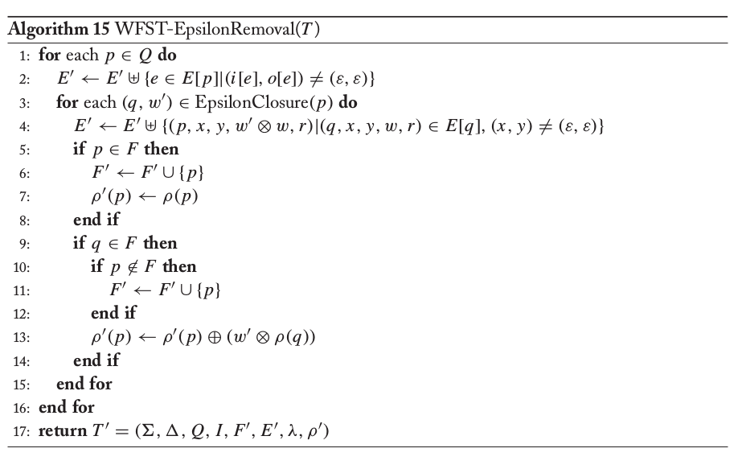
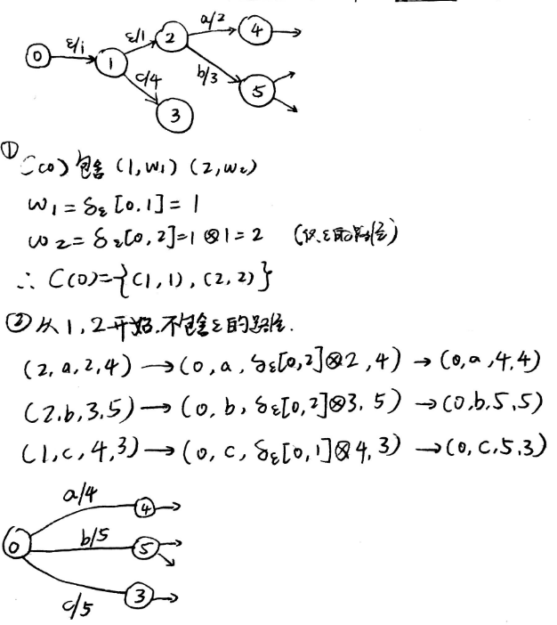

WFST详解#5
Epsilon-Removal
本文是WFST系列文章的其中一篇，想要了解更多可以点击这个系列的目录，欢迎您的到来～
定义
在自动机和转化机的生成操作中，我们可能会生成很多的空转移。这些空转移会使得整体的转移时间延长。为了使得整个转换机或者自动机运行得更加有效率，我们需要将一些空转移去除掉。这也是Epsilon-Removal算法的目标。
算法
我们先来看看算法的流程。下面是算法的伪代码：

- 我们需要遍历每一个状态p。
- 首先创建一个新的弧边的集合E‘。在这个集合里面，把从p出发的非空转移加入。注意，这个E’最终会形成一个新的弧的集合。
- 我们遍历从当前状态p出发，那些全是空转移的路径。如果遇到没有空转移的弧，我们要更新我们的集合E’：将空转移上的路径慢慢起来，给新的集合E‘的权重赋上新的值；使用当前状态p作为新的起点。
- 当p或者q是终止状态的时候，将p设置为终止状态。并计算对应情况的终止的权重。
例子
下面是一个小例子：

可以看到，我们从一个点出发，找到了所有可以走的由组成的路径。如果这些路径通往了一些非空转移的弧，我们可以通过操作累积，新建一个权重。而这一个弧的起点也要改成当前正在遍历的状态p。
以上就是Epsilon-Removal算法。